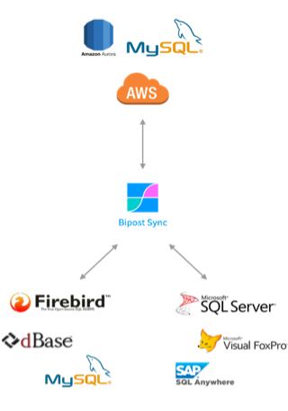

Overview¶
Bipost is a simple database synchronization tool for continually moving data from on-premises to AWS Aurora MySQL and back forward.
Created to keep your Windows databases on-premises while providing a way to extract, load & transform specific sets of data to AWS Aurora. Two-way database synchronization also available, from AWS back to on-prem.
Sources:
Destination:
Fully deployed on AWS with serverless technologies to scale at demand. Delivered as Software as a Service (SaaS).

How it works¶
- On every sync Bipost Sync reads table schema's and data and uploads it to AWS.
- Fully customize data sets to upload using customData.json
- Database and tables are created/altered if they don't exist, and data is loaded to Aurora-MySQL.
- Before and after data is loaded to Aurora-MySQL you can transform data with stored procedures.
- Upload the same data multiple times and avoid duplicates. Data is replaced using primary keys.
- Run manually or automatically with a Windows Task schedule.
- Upload big datasets using Recursive Sync.
Data is also available as CSV files on S3 so you can use other AWS services like Athena and Glue to build your data lake.
Two-way synchronization¶
- Synchronize from Aurora-MySQL to on-premises SQL Server or Firebird SQL.
- Specify data to download using outData.json
- Insert/update the returned data to your on-prem DB or just save the CSV files on Windows.
- Tables schemas are created/altered on your on-prem DB if they don't exist.
- Primary keys set on Aurora-MySQL are used against on-prem DB to avoid duplicates.
- Before and after data is loaded to on-prem DB you can transform data with stored procedures.
- Not available for DBF dBase III on-prem.
- Learn more here.
Use Cases¶
- Great way to consolidate information from separate databases and locations, e.g. merge your sales and inventory information from different branches.
- Ideal to extend your on-premises ERP to the cloud and build web applications, web services and API's on top of AWS cloud platform, with services such as API Gateway and Lambda.
- Build Business Intelligence dashboards using Google Data Studio or AWS QuickSight, with a direct connection to Aurora-MySQL.
Private Cloud¶
We care deeply about privacy.
Our API links to your RDS instance on your AWS account, so you have full control of your databases.
Each RDS Aurora instance loads data by accessing a dedicated bucket, exclusive to your AWS account.
Architecture¶

Aurora is a MySQL compatible, fully managed database service built for the cloud with the performance and scalability of high-end commercial databases at 1/10th the cost.
Start Using¶
- 30 days free.
- Unlimited databases and synchronizations.
- No need to provide credit card information.
Or email us: info@factorbi.com
Prices¶
Pricing here: www.factorbi.com
Firebird Community, Members to Members Offer available.
Members of Comunidad AWS en Español, ask for special deal.
On The Media¶
A journey from on-premises to Cloud Business Intelligence
Why we dropped Microsoft Power BI and embraced AWS QuickSight
Release Notes¶
1.1.0 (GA) 2018-08-12¶
- DBF dBase III on-prem connection added.
- Run unlimited time stored procedures after data is uploaded to Aurora (previously limited to 5 minutes).
- Improved security for two-way synchronization.
- Improved support for special characters, e.g. now able to sync XML documents inside BLOB (Firebird) and TEXT (SQL Server) fields.
- First time customers: Automated creation of AWS services via CloudFormation template.
- Bug fixes.
1.0.0 (General Availability) 2018-03-02¶
- Data upload is now done through secure HTTPS.
- JOIN parameter now supported for Firebird SQL.
- Recursive sync now supported for Firebird SQL.
- Connection information is now encrypted.
- Bug fixes.
0.5.6 (Beta) 2017-12-02¶
- Bidirectional syncing is here!
- Synchronize to any AWS Region.
- Performance improvements to API, now able to load nearly 1.5 million rows (or 280 MB uncompressed files) on a single call. Future releases will support much more since AWS Lambda recently doubled maximum memory capacity to 3 GB.
- Firebird transaction READ UNCOMMITTED to prevent Bipost Sync from being stopped while other transactions are still not committed.
- Initial and final statements on Aurora MySQL are disabled on recursive sync. This prevents excessive workload on your RDS instance.
- Bug fixes to API and Bipost Sync.
0.4.2 (Beta) 2017-09-16¶
- Table schemas are now synchronized against source definition on every sync, details here.
- Bipost Sync bug fixes.
- Bipost API bug fixes.
0.4.0 (Beta) 2017-08-20¶
- Custom connections added.
- Initial statement added to API.
- Special characters are deleted on string columns of 100 characters length or up.
Contact¶
We are always happy to hear about you.
Please send us an email to: info@factorbi.com